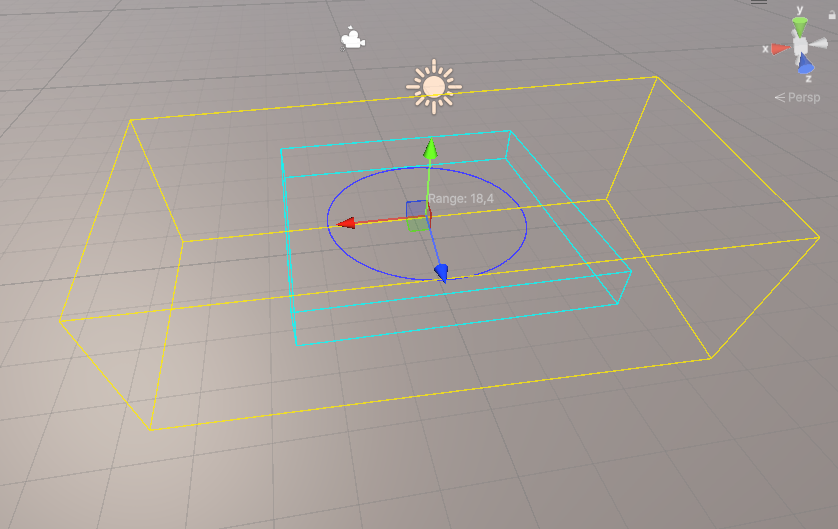
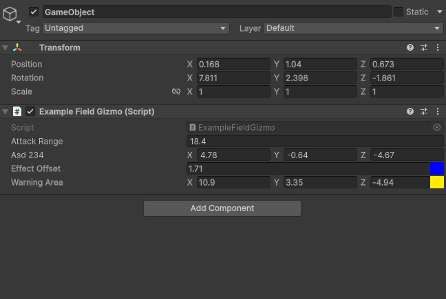
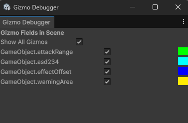
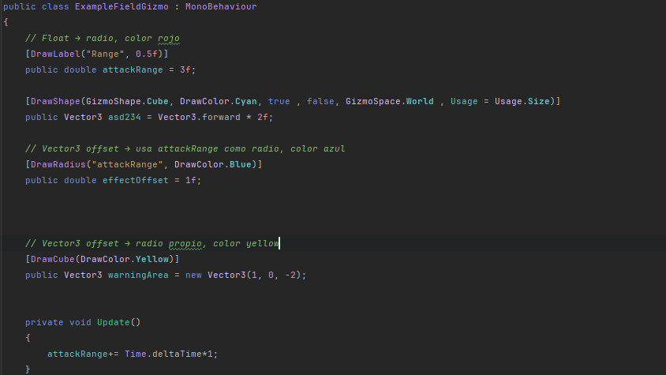

Custom Attribute-Driven Gizmo System
Tool Usage Video
This is a Unity editor/runtime tooling project where I built a custom gizmo system to visualize gameplay data directly in Scene View.
The goal was to reuse in diferent projects and reduce debugging time by drawing ranges, directions, volumes, and labels from normal fields using attributes.
The workflow is based on attributes + renderer cache + debug window, so setup is simple and iteration is fast.
- Attribute-driven setup: add annotations like DrawRadius, DrawCube, DrawArea, DrawLine, DrawShape, and DrawLabel on fields.
- Automatic scene scanning: RuntimeGizmoRenderer reflects MonoBehaviours and caches compatible fields.
- Shape support: line, cube, radius disc, sphere discs, and labels.
- Configurable behavior per field: world/local space, transform rotation usage, and usage mode (size, direction, offset).
- Live values from fields: float/double/vector/bounds values are interpreted and visualized automatically.
- Editor control panel: Gizmo Debugger window with global and per-field toggles plus color preview.
- Play mode control: each attribute can decide whether it renders during play mode.
Why I built it: I wanted designers and programmers to see gameplay intent in the scene instantly, without writing one-off gizmo scripts for each component.
Core scripts in this tool:
- RuntimeGizmoRenderer.cs - reflection cache, field value parsing, and Handles drawing in Scene View.
- DrawGizmoAttribute.cs - base metadata for color, shape, play mode, space, rotation, and usage.
- DrawRadiusAttribute.cs / DrawCubeAttribute.cs / DrawAreaAttribute.cs / DrawLineAttribute.cs / DrawLabelAttribute.cs - specialized field annotations.
- RuntimeGizmoRequest.cs - shape, usage, and space enums used by the system.
- GizmoDebuggerWindow.cs - editor window to inspect and toggle gizmos quickly.
- ExampleFieldGizmo.cs - practical example showing how attributes drive scene visualization.
Suggested screenshots for this project page:



